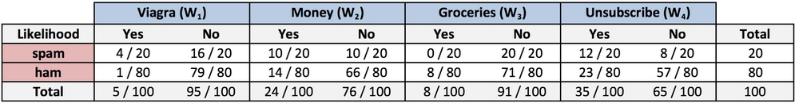
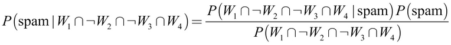
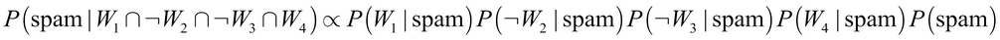
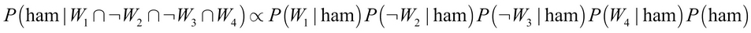
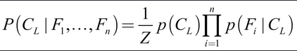
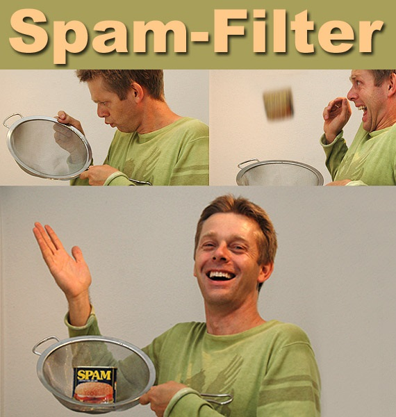

Supervised Naive Bayes Prediction
Created: 2023-03-13 Mon 23:53
Examples: spam / sentiment analysis

Is the message spam given that it contains the terms "Viagra" and "unsubscribe", but not "Money" or "Groceries"?

Cp. "The Ultimate List of 394 Email Spam Trigger Words to Avoid in 2023"



